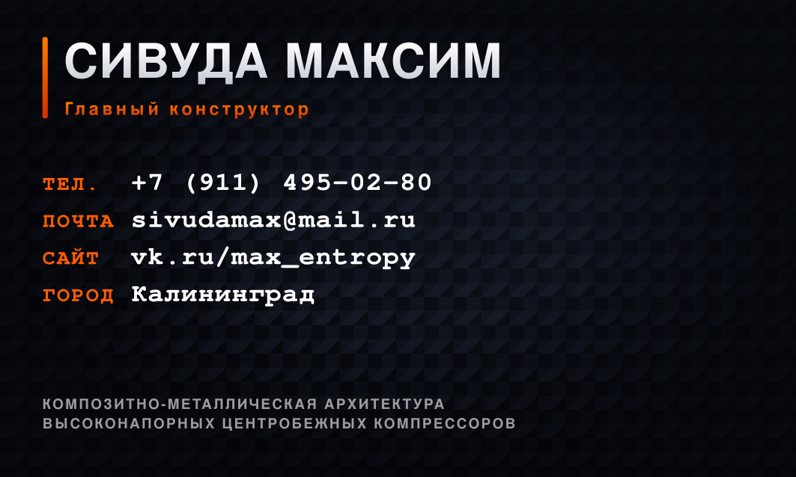
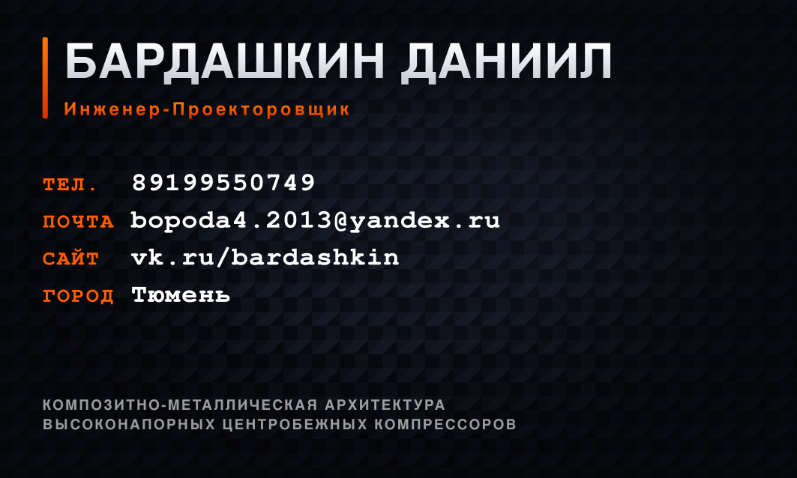
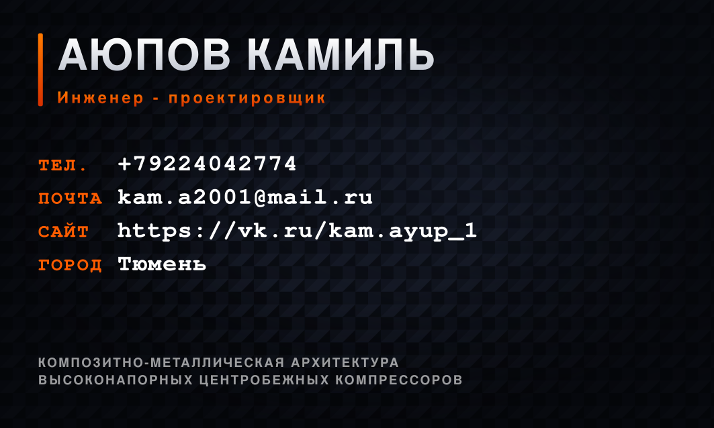
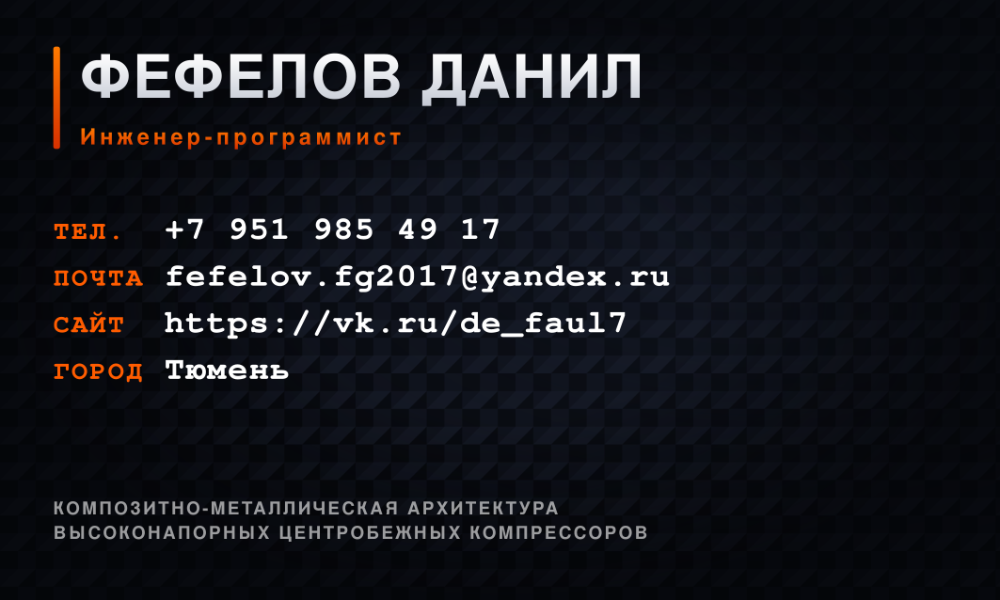

Документация, чертежи, модели и расчёты
Единый конкурсный архив проекта. Документы приведены по фактической ведомости технического проекта и обозначениям EMTH.19.01.02.59.00.000.
Проверенный комплект документации
Позиции 0001–0017 соответствуют ведомости технического проекта; 0018 — отдельный расчёт прочности РК‑200‑Э.
Пояснительная записка
Рабочие колёса РК‑200‑Э, РК‑200‑Д↗ PDF · 0002 · ТУ · ред. 01Технические условия
Требования к опытным образцам↗ PDF · 0003 · ПМ · ред. 02Программа и методика испытаний
Сравнительная валидация геометрии и материала↗ PDF · 0004 · МК · ред. 01Маршрутная карта
Изготовление М1 и М2↗ PDF · 0005 · ПС · ред. 01Паспорт РК‑200‑Э
Геометрия max_efficiency↗ PDF · 0006 · ПС · ред. 01Паспорт РК‑200‑Д
Геометрия max_pressure↗ PDF · 0007 · Д · ред. 01Верификация 3D‑моделей
Контроль STEP и геометрии↗ PDF · 0008 · Д · ред. 01FMEA
Анализ видов и последствий отказов↗ PDF · 0009 · ТБ · ред. 01Матрица требований
Трассировка требований и подтверждений↗ PDF · 0010 · СП · ред. 01Спецификация
Состав изделия и исполнения↗ PDF · 0011 · Д · ред. 01Формы протоколов
Контроль, балансировка и испытания↗ PDF · 0012 · ТП · ред. 01Ведомость технического проекта
Реестр проверенного комплекта↗ PDF · 0013 · Д · ред. 01Патентные исследования
Поиск и анализ технических решений↗ PDF · 0014 · ПЗ · ред. 01Технико‑экономическое обоснование
Модель единичного НИОКР‑заказа↗ PDF · 0015 · ПЗ · ред. 01Обоснование выбора привода
Двигатель и преобразователь частоты↗ PDF · 0016 · Э3 · ред. 01Электрическая схема
Принципиальная схема стенда↗ PDF · 0017 · С2 · ред. 01Функциональная схема
Комбинированная схема стенда↗ PDF · 0018 · РР · ред. 01Расчёт на прочность РК‑200‑Э
Области применения и ограничения↗DOCX‑версии документов
Файлы для проверки обозначений, таблиц, формул и дальнейшего выпуска редакций.
Пояснительная записка
0001_pz_.docx↓ DOCX · 02Технические условия
0002_tu.docx↓ DOCX · 03Программа и методика испытаний
0003_pm.docx↓ DOCX · 04Маршрутная карта
0004_mk.docx↓ DOCX · 05Паспорт РК‑200‑Э
0005_ps_e.docx↓ DOCX · 06Паспорт РК‑200‑Д
0006_ps_d.docx↓ DOCX · 07Верификация 3D‑моделей
0007_d_models.docx↓ DOCX · 08FMEA
0008_d_fmea.docx↓ DOCX · 09Матрица требований
0009_tb.docx↓ DOCX · 10Спецификация
0010_sp.docx↓ DOCX · 11Формы протоколов
0011_d_forms.docx↓ DOCX · 12Ведомость технического проекта
0012_tp.docx↓ DOCX · 13Патентные исследования
0013_d_patent.docx↓ DOCX · 14ТЭО
0014_pz_econ.docx↓ DOCX · 15Выбор привода
0015_pz_motor.docx↓ DOCX · 16Расчёт прочности РК‑200‑Э
0018_rr_strength_rk200e_.docx↓Чертежи и производственные файлы
13 листов КОМПАС CDW (узлы компрессора, стенд, схема) и 4 DWG-файла для 3D-печати. Исходные имена файлов сохранены.
Композитное рабочее колесо
Узел компрессора↓ CDW · 01аРабочее колесо — вариант 2
Альтернативный вариант↓ CDW · 02Диффузор
Узел компрессора↓ CDW · 03Корпус улитки
Узел компрессора↓ CDW · 04Фланец ДМРВ
Узел компрессора↓ CDW · 05Крышка корпуса
Узел компрессора↓ CDW · 06Виброупор
Узел компрессора↓ CDW · 07Стенд для испытаний
Сборочный чертёж стенда↓ CDW · 08Рама стенда
Несущая рама↓ CDW · 09Турбина СБ
Сборочный чертёж турбины↓ CDW · СХФункциональная схема
Комбинированная схема стенда↓ DWG · Д1Крышка корпуса (ABS)
Для 3D-печати↓ DWG · Д2Диффузор (ABS)
Для 3D-печати↓ DWG · Д3Корпус улитки (ABS)
Для 3D-печати↓ DWG · Д4Фланец ДМРВ (ABS)
Для 3D-печати↓CAD и параметрическая модель
STEP‑модели рабочего колеса для двух аэродинамических геометрий и исходный код параметрического генератора.
ANSYS‑отчёты и видеорезультаты
Исходные отчёты по РК‑200‑Э, РК‑200‑Д для стендового и расчётного режимов.
ReportANSYS maxeff with vtulka bonded12000
Исходный материал прочностного анализа↗ PDF · 02ReportANSYS maxeff with vtulka3000
Исходный материал прочностного анализа↗ PDF · 03ReportANSYS maxeff with vtulka6000
Исходный материал прочностного анализа↗ PDF · 04ReportANSYS maxeff with vtulka11000
Исходный материал прочностного анализа↗ PDF · 05Myreport max eff with vtulka3000
Исходный материал прочностного анализа↗ PDF · 06ReportANSYS pressure 3000 bonded without vtulka
Исходный материал прочностного анализа↗ PDF · 07ReportANSYS pressure 12000 bonded without vtulka
Исходный материал прочностного анализа↗ PDF · 08Myreport pressure 12000 bonded without vtulka
Исходный материал прочностного анализа↗ WMV · 09max eff totaldeformation3000 video
Исходный материал прочностного анализа↗ WMV · 10max pressure eqstress 3000 bonded without vtulka video
Исходный материал прочностного анализа↗ WMV · 11max pressure totaldeformation 3000 bonded without vtulka video
Исходный материал прочностного анализа↗ WMV · 12max pressure eqstress 12000 bonded without vtulka video
Исходный материал прочностного анализа↗ WMV · 13max pressure totaldeformation 12000 bonded without vtulka video
Исходный материал прочностного анализа↗ GOOGLE DOC · 14Выводы: сталь и пластик
Сводная интерпретация расчётных материалов↗ DRIVE · ПОЛНЫЙ АРХИВВсе 18 расчётных материалов
Включая параллельные редакции отчётов и видео↗ТЗ, критерии и закупочная ведомость
Материалы, по которым проверяется комплектность конкурсного решения.
Маркетинговые материалы
Брошюра проекта, презентация и визитки участников команды.
Презентация проекта МИТК‑РК
Новая версия по плану конкурса↗PDF · БРОШЮРАБрошюра MITK-RK
Обзор проекта для партнёров и заказчиков↗
Участник 01
Участник 03
Участник 07
Участник 08Google Drive и Miro
Полный архив расчётов, чертежей и рабочее пространство для совместного проектирования.